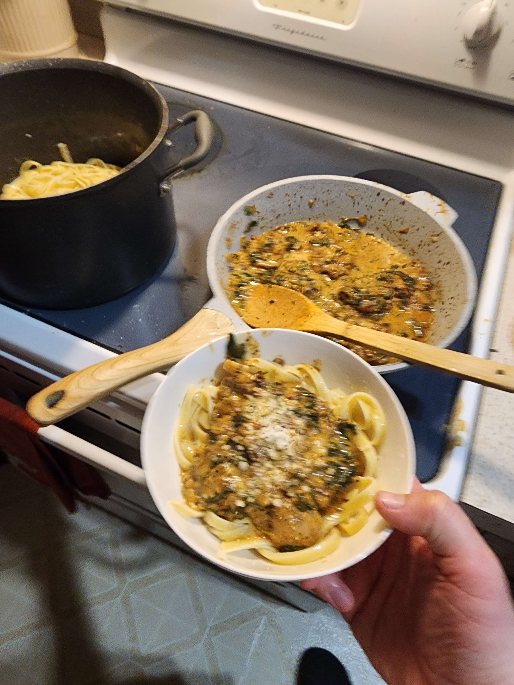

Tuscan Chicken

Description
Creamy and savory tuscan chicken, served with either pasta or rice!
Ingredients
- 2T olive oil
- boneless, skinless chicken thighs
- 1.5t Lemon Pepper Seasoning
- 1/2c chopped onion
- 3 garlic cloves, minced
- 1/3c chicken broth
- 1c heavy cream
- 1/2c freshly grated Parmesan cheese
- 1/2c crushed sun-dried tomatoes
- 1t Italian seasoning
- 1/4t garlic powder
- 4c baby spinach
Steps
- Place olive oil in a large skillet over medium-high heat.
- Season chicken with lemon pepper.
-
Add chicken to skillet and cook 3 to 4 minutes per side, or
until cooked through (until instant-read thermometer reads 165
degrees F)
-
Remove chicken and set aside. Start boiling a pot of water for
the pasta.
-
Add onion to skillet and cook for about 3 minutes to soften.
-
Add garlic and cook 1 more minute. Once water is boiling, salt
and add pasta.
-
Add chicken broth and scrape up any browned bits from the bottom
of the skillet.
- Add heavy cream and bring to a simmer for 1 minute.
- Add Parmesan and stir until melted.
-
Add sun-dried tomatoes, Italian seasoning, and garlic powder.
-
Stir in spinach. Cook and stir until spinach is wilted. Add a
ladle-full of starchy pasta water to the sauce before you strain
the pasta, stir. Strain the pasta. (if you want it extra rich,
melt some butter in the noodles).
-
Season sauce to taste with salt and pepper, add chicken back in
and coat it with the sauce.
-
Serve a nest of pasta with a scoop of the Tuscan sauce, top with
a chicken thigh and garnish with parmesan cheese.